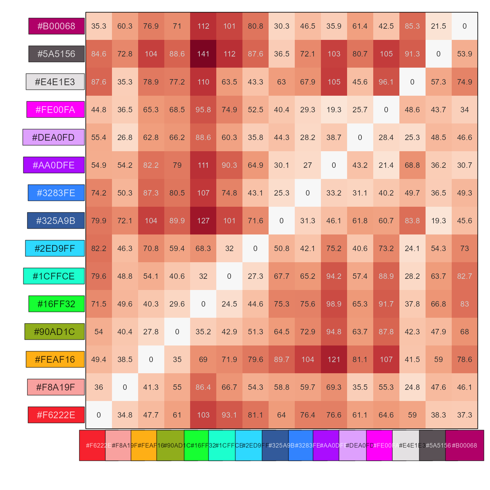
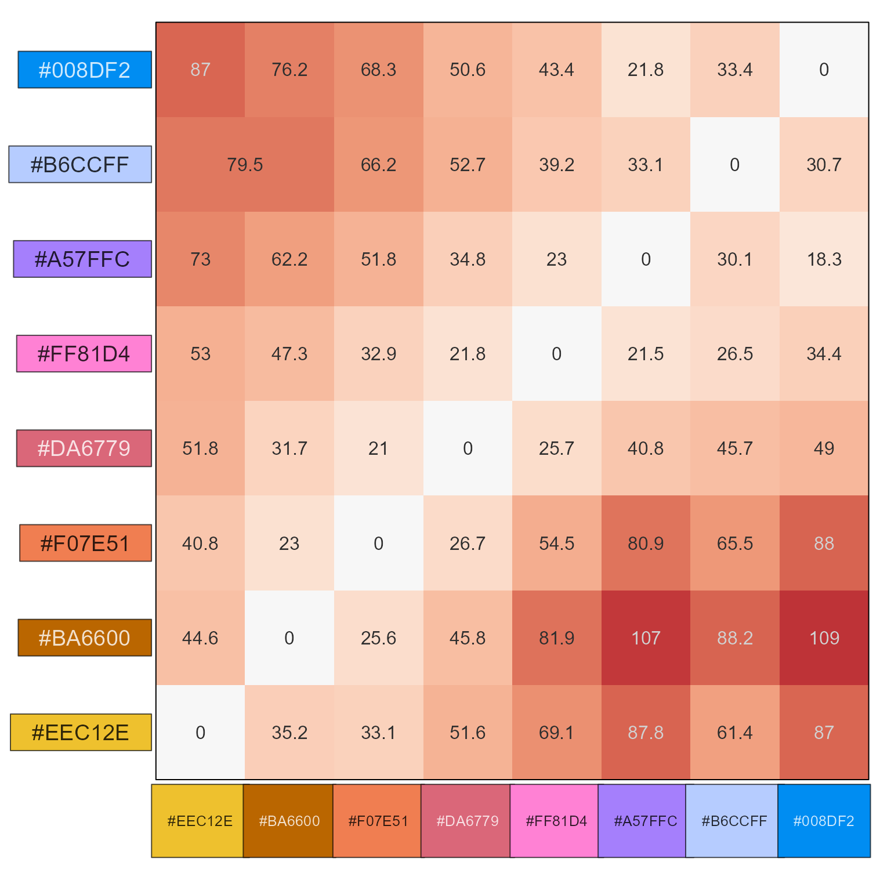

Calculate color distance between two or more colors
Source:R/colorjam-color-distance.R
color_distance.RdCalculate color distance between two or more colors
Usage
color_distance(
x,
y = NULL,
method = c("cmc", "cie2000", "cie94", "cie1976", "euclidean"),
use_white = "F5",
lightness = 2/3,
chroma = 1,
do_plot = FALSE,
...
)Arguments
- x
charactercolor, required input colors.When
yis supplied, values inyare recycled tolength(x), and each entry inxis directly compared toy.When
yis not supplied,xis compared to itself, returning amatrix.
- y
charactercolor, default NULL- method
character, default 'cmc', the color distance method, passed tofarver::compare_colour().Note that 'cmc' uses arguments
lightnessandchromawhich have custom values 2/3 and 1, respectively. The defaults are 2 and 1 for acceptability, and 1 and 1 for perceptability. In our testing, 2/3 and 1 were more useful, since lightness on computer screen and in print is more easily perceived than on a painted surface.In future, this argument may permit additional distance methods, and/or specific color function, in order to impose other criteria and adjustments.
- use_white
characterdefault "F5" representing the white reference, any value recognized byfarver::as_white_ref().The default 'F5' represents 'daylight fluorescent' and in qualitative testing was most effective when defining color distances.
The typical default 'D65' is 'daylight 6500K' and is typically used for neutral daylight without blue (cool) or yellow (warm) shifted background lighting.
- do_plot
logicaldefault FALSE, whether to plot results usingshow_color_distance().- ...
additional arguments are passed to
farver::compare_colour()and toshow_color_distance().
Value
numeric color distance with length(x) entries when both
x and y are supplied, or a numeric matrix with color distances
between all entries in x.
An attribute 'method' is added with the color distance used, mainly so the method can be used by
show_color_distance(), but also by other methods as relevant.
Details
Color distance is calculated using farver::compare_colour(),
with some defaults intended in future to assist with color blindness
calculations.
See also
Other colorjam internal:
find_color_spread(),
jam_pal(),
rainbowJam_v1(),
show_color_distance(),
slot_colors(),
vals2colorLevels()
Examples
color_distance("red", "firebrick", use_white="D65")
#> firebrick
#> red 22.38522
#> attr(,"method")
#> [1] "cmc"
palette15 <- sort_colors(grDevices::palette.colors(15, "Polychrome 36"))
color_distance(palette15, do_plot=TRUE)

#> #F6222E #F8A19F #FEAF16 #90AD1C #16FF32 #1CFFCE #2ED9FF
#> #F6222E 0.00000 34.84379 47.68588 60.99085 103.14303 93.06056 81.08992
#> #F8A19F 36.03859 0.00000 41.28901 54.99202 86.44702 66.72123 54.25993
#> #FEAF16 49.41768 38.54959 0.00000 34.95589 69.02022 71.94507 79.59131
#> #90AD1C 54.03879 40.38783 27.75446 0.00000 35.20674 42.94395 51.27620
#> #16FF32 71.54797 49.58663 40.31556 29.58820 0.00000 24.51203 44.58252
#> #1CFFCE 79.64773 48.78082 54.12378 40.63993 32.04925 0.00000 27.26390
#> #2ED9FF 82.16015 46.28397 70.80047 59.43527 68.30940 31.96025 0.00000
#> #325A9B 79.86854 72.08092 103.55727 89.93610 126.53861 100.61695 71.60691
#> #3283FE 74.18636 50.34021 87.27510 80.46798 106.93237 74.76470 43.13957
#> #AA0DFE 54.86296 54.15458 82.18213 78.97059 111.15367 90.28674 64.94245
#> #DEA0FD 55.37614 26.76941 62.77376 66.15942 88.63482 60.33702 35.83144
#> #FE00FA 44.82124 36.47454 65.29635 68.50702 95.84119 74.92244 52.54432
#> #E4E1E3 87.59680 35.34625 78.85312 77.15782 109.83938 63.50452 43.27117
#> #5A5156 84.57608 72.84184 103.81656 88.61737 141.35128 111.53990 87.62374
#> #B00068 35.29589 60.31186 76.94657 71.02580 111.87564 101.25893 80.75631
#> #325A9B #3283FE #AA0DFE #DEA0FD #FE00FA #E4E1E3 #5A5156
#> #F6222E 64.01133 76.35637 76.58090 61.09941 64.56939 58.99770 38.27193
#> #F8A19F 58.80475 59.74237 69.33947 35.52540 55.25808 24.80086 47.62922
#> #FEAF16 89.70572 103.74245 120.87628 81.05738 107.37404 41.48506 59.03484
#> #90AD1C 64.48735 72.87219 94.82841 63.68990 87.76692 42.33851 47.89049
#> #16FF32 75.28030 75.64659 98.91349 65.25501 91.69461 37.75507 66.79824
#> #1CFFCE 67.71538 65.21029 94.19185 57.41550 88.89785 28.18646 63.72876
#> #2ED9FF 50.77008 42.14003 75.17112 40.63685 73.18096 24.09502 54.34041
#> #325A9B 0.00000 31.26973 46.05568 61.82963 60.65175 83.80635 19.28201
#> #3283FE 25.29249 0.00000 33.21738 31.07325 40.19120 49.66207 36.51808
#> #AA0DFE 30.11630 26.95776 0.00000 43.17051 21.35990 68.82046 36.16143
#> #DEA0FD 44.27152 28.16969 38.71632 0.00000 28.41233 25.27299 48.52889
#> #FE00FA 40.37387 29.26387 19.31716 25.73361 0.00000 48.64033 43.70602
#> #E4E1E3 63.04856 67.89385 104.82523 45.57014 96.14184 0.00000 57.31114
#> #5A5156 36.51210 72.07421 103.27809 80.68266 105.19581 91.25019 0.00000
#> #B00068 30.27081 46.49837 35.86191 61.40719 42.54825 85.33315 21.54494
#> #B00068
#> #F6222E 37.28848
#> #F8A19F 46.08040
#> #FEAF16 78.55305
#> #90AD1C 67.98670
#> #16FF32 83.02347
#> #1CFFCE 82.67046
#> #2ED9FF 72.98613
#> #325A9B 45.60677
#> #3283FE 49.34925
#> #AA0DFE 30.67636
#> #DEA0FD 46.55362
#> #FE00FA 34.02356
#> #E4E1E3 74.85973
#> #5A5156 53.93376
#> #B00068 0.00000
#> attr(,"method")
#> [1] "cmc"
pc <- rainbowJam(8)
cd <- color_distance(pc);
show_color_distance(cd, pc=pc);
